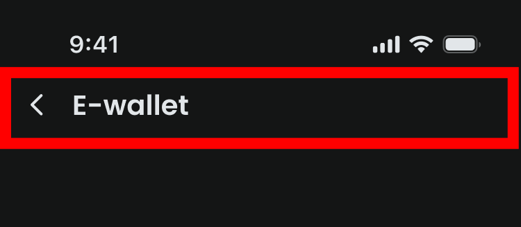
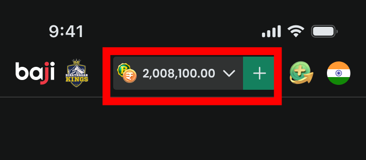
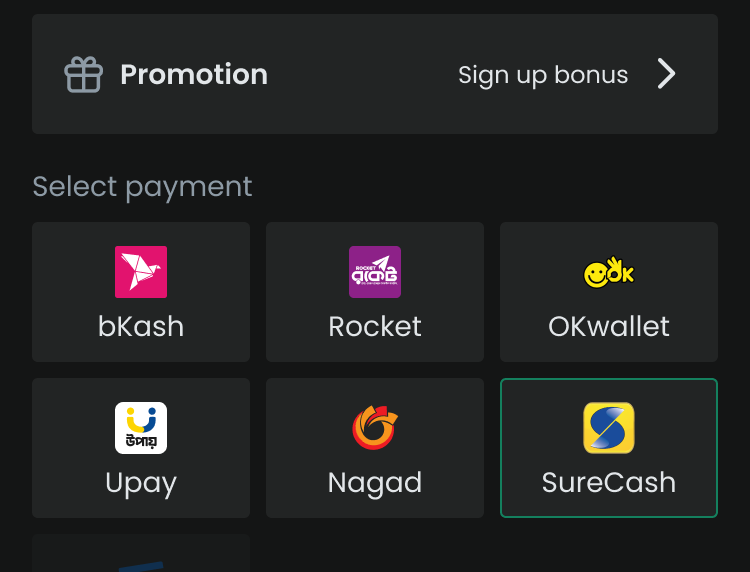

關鍵發現 · Persona
三分之一的放棄者：有存款意願，只是卡住了
34.7%
16,522 次
反覆切換存款方式，或中途離開查餘額
存款流程示意

解法 01-1 · Tab 切換支付方式
換方式不再需要回到上一頁
數據支撐：34.7% 玩家卡在存款流程，換方式三輪留存率 79–82%，問題在流程而非意願
現有設計

換方式需回到上一頁重新選擇，再進入新的表單頁
新設計 · 對應 p2 原型

在同一頁面以 Tab 直接切換支付方式，無需回上一頁
解法 01-2 · 在存款頁顯示餘額
不用離開存款頁就能確認餘額
數據支撐：34.7% 玩家卡在存款流程，查完餘額幾乎全部回來（留存率 91%），有意願但資訊不完整
現有設計

存款頁不顯示餘額，玩家需離開去查，查完再回來
新設計 · 對應 p2 原型

存款頁直接顯示 Balance ৳2,450，玩家無需離頁確認
解法 01-3 · Promotion 相容性提示
選錯 Promotion，玩家不會被悄悄改掉而不知情
目前若玩家選擇的 Promotion 不符合所選支付方式，系統會自動改為「No Promotion」，玩家不會收到任何提示。玩家可能存款後才發現 Promotion 未套用。
現有設計 — 沒有提示

Promotion 被靜默改掉，玩家毫不知情
新設計 · 對應 p2 原型

跳出提示告知玩家「此 Promotion 不支援所選支付方式」，讓玩家主動選擇
解法 02 · 現有 vs 新設計
從多個步驟，縮短到 1 個確認
現有流程

每次都需要重新選方式、填金額、選 Promotion
新設計 · 對應 p6 原型

自動帶入上次設定，玩家只需確認一次即可完成存款
解法 03 · Quick Deposit 曝光
Quick Deposit 一直在那裡，但 93.7% 的人沒點它
GA4 · 存款入口事件計數（734,468 次）
deposit_normal（一般存款）
43.8%
deposit_quick（Quick Deposit）
6.3%
根本原因
76.1% 的存款從首頁發起，玩家每次都看到 Quick Deposit 按鈕——但幾乎沒人點。不是曝光不夠，是玩家不知道這顆按鈕能做什麼。